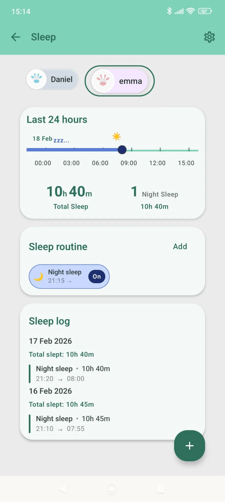

In questa pagina · 7 sezioni
In breve
La maggior parte dei bambini passa dal lettino al letto tra i 18 mesi e i 3 anni. Se dorme bene e il lettino è sicuro, non c'è fretta. Il motivo più importante per fare il cambio è che si arrampichi o cada dal lettino, cioè quando la sponda gli arriva ormai troppo bassa per la sua altezza. Evita di farlo poco prima dell'arrivo di un fratellino, di un trasloco o di un altro grande cambiamento.
Segnali che è il momento
- Si arrampica o cade dal lettino. È il segnale più importante: quando un bambino riesce a uscire da solo dal lettino, può essere il momento di passare a un letto.
- Non ci sta più comodo. Se il lettino è diventato piccolo e dorme rannicchiato o scomodo, il cambio ha senso.
- Inizia a gestire la notte senza pannolino. Se state togliendo il pannolino di notte, un letto in cui possa salire e scendere da solo gli facilita andare in bagno.
L'età da sola è un cattivo motivo per cambiare: se dorme bene e non cerca di uscire, il lettino resta un posto sicuro e puoi aspettare.
Guarda come cambiano le sue notti
Registra il sonno con Raffy, con promemoria e diario, e controlla come evolvono le notti durante la transizione.

Quando è meglio aspettare
- Se sta per arrivare un fratellino: non cambiargli letto proprio prima, perché non viva la cosa come se il neonato gli stesse prendendo il posto. Meglio farlo con un buon margine o rimandare a dopo.
- Se state per traslocare, o per inaugurare una nuova cameretta o iniziare il nido.
- Se c'è un altro grande cambiamento in casa: meglio non aggiungerne un altro.
Se il cambio è per sicurezza perché ormai si arrampica, non aspettare: la priorità è evitare che cada, e puoi mettere il materasso del lettino sul pavimento finché non arriva il letto (vedi più sotto).
Quale letto scegliere
- Letto basso con sponda. Dà una sensazione di limite e somiglia a ciò che già conosce.
- Materasso sul pavimento (letto montessoriano). Riduce il rischio di caduta e gli dà libertà di alzarsi; richiede una cameretta molto ben preparata, perché il bambino potrà muoversi al suo interno.
- Lettino convertibile. Mantiene un ambiente familiare e di solito conviene, ma bisogna averlo scelto fin dall'inizio.
Come fare il passaggio
- Coinvolgilo: fagli scegliere le lenzuola o un peluche per il suo letto nuovo.
- Mantieni la stessa routine della buonanotte (bagnetto, storia, luce soffusa) alla stessa ora; la routine prima del sonno dovrebbe finire nel suo letto.
- Se puoi, metti il letto nello stesso punto della cameretta in cui stava il lettino.
- Metti un cancelletto di sicurezza alla porta della camera, così può muoversi nella stanza ma non girare per casa di notte.
- Se si alza di notte, riportalo a letto con calma e poche parole. Non premiarlo lasciandolo venire nel vostro.
- Metti in conto che all'inizio possa costare più fatica metterlo a letto o ci siano più risvegli: è una regressione normale.
Passare al letto e passare alla sua cameretta sono decisioni diverse: puoi fare l'una senza l'altra. Se devi anche mettere ordine nei pisolini e nell'ora della nanna, guarda la routine del sonno del neonato per età.
Sicurezza nella cameretta
Sicurezza pediatrica
- Se si arrampica, non aspettare il letto nuovo: nel frattempo metti il materasso del lettino sul pavimento.
- Libera la zona da mobili e giochi grandi contro cui potrebbe battere se cade.
- Fissa al muro cassettiere, scaffali e altri mobili che potrebbero ribaltarsi se il bambino ci si arrampica, e metti dei blocchi ai cassetti perché non li usi come gradini.
- Usa un cancelletto di sicurezza alla porta della camera e un altro in cima alle scale, se ci sono.
- Usa tende e tapparelle senza cordino; se hanno dei cordini, accorciali o tienili fuori dalla sua portata.
- Copri le prese elettriche con protezioni che il bambino non riesca a togliere facilmente.
- Se il letto è vicino a una finestra, questa deve avere blocchi o fermi di sicurezza.
- Sotto l'anno di età, niente cuscini né biancheria da letto voluminosa; per questo non fare il cambio troppo presto.
- Se i problemi di sonno si protraggono dopo il cambio, parlane con il pediatra.
Domande frequenti
A che età bisogna passare il bambino dal lettino al letto?
Non c'è un'età esatta. La maggior parte dei bambini fa il passaggio tra i 18 mesi e i 3 anni. Quello che conta è la sicurezza e come dorme: se esce dal lettino o non ci sta più, è ora di cambiare; se dorme bene e non si arrampica, puoi aspettare.
Passare al letto a 18 mesi è troppo presto?
Rientra nella norma, ma non è obbligatorio. Se a quell'età dorme bene nel lettino e non cerca di uscire, non c'è fretta. Se si arrampica, la priorità è la sicurezza e conviene fare il cambio.
È meglio un letto con sponda, un materasso sul pavimento o un lettino convertibile?
Vanno bene tutti e tre. Il letto basso con sponda dà una sensazione di limite; il materasso sul pavimento riduce il rischio di caduta ma richiede una stanza sicura; il lettino convertibile mantiene lo stesso ambiente, ma bisogna acquistarlo prima. Scegli quello che si adatta alla vostra stanza e al vostro budget.
Cosa faccio se si alza dal letto di notte?
Riportalo a letto con calma, con poche parole e senza accendere luci forti. Mantieni la stessa routine ed evita di premiare la fuga, per esempio lasciandolo dormire nel vostro letto. Di solito servono diverse notti di fila.
È normale che dorma peggio dopo il cambio?
Sì. È normale che all'inizio costi più fatica metterlo a letto o che ci siano più risvegli. Se i problemi di sonno si protraggono o ti preoccupano, parlane con il suo pediatra.
Passare al letto è lo stesso che passare alla sua cameretta?
No. Sono due decisioni diverse. Puoi passare dal lettino al letto nella stessa stanza in cui già dormiva e cambiare stanza in un altro momento.
Fonti
- American Academy of Pediatrics · HealthyChildren.orgBig Kid Beds: When to Switch From a Crib (in inglese)
- NHS · Cambridgeshire and Peterborough Children’s HealthKeeping your sleeping baby safe (in inglese)
- Associazione Spagnola di Pediatria (AEP) · En FamiliaAbitudini di sonno sane: igiene del sonno (in spagnolo)
- U.S. Consumer Product Safety Commission (CPSC)Anchor It! Campagna contro il ribaltamento di mobili e televisori (in inglese)
- U.S. Consumer Product Safety Commission (CPSC)Childproofing Your Home (in inglese)
Abbiamo verificato questo articolo con queste fonti il 26 novembre 2026. Ha scopo educativo e non sostituisce il parere medico. Politica editoriale